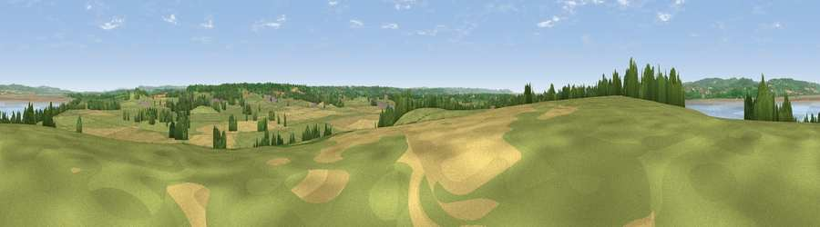

Viewpoint near Aust
#12893 in England · top 17% of its area beats it · near AustWhere it is
The exact computed spot (ST 57925 89925). Click the marker for map links.
The view, rendered

A 360° render of this exact spot computed from the terrain model, tree cover and land cover — summer colours, afternoon light, calibrated against photographs of famous viewpoints. Real trees, hedges and buildings will differ in detail.
The panorama
Grey silhouette: terrain skyline in each direction (720 bearings, Earth curvature and refraction included). Dashed green: skyline with trees (+15 m) and buildings (+8 m) as obstacles. Blue strip: how far the ground is visible on each bearing.
Where the view opens
Wedge length = distance to the farthest visible ground on that bearing (vegetation-aware). Rings at 10, 25 and 50 km.
What fills the view
47% grassland · 19% water · 19% cropland · 13% woodland · 2% built-up
Angular shares of the visible panorama (visual magnitude), not map area. Landscape diversity 0.58 (0–1 Shannon).
Key numbers
More beautiful places nearby
The staircase of upgrades: each row has a higher view potential than everything closer. Driving times are estimates from straight-line distance, calibrated against real road routing — check an actual route before setting out.
| Place | Direction | Drive | Score |
|---|---|---|---|
| Viewpoint near Aust | W · 1 km | ~3 min | 60.1 |
| Viewpoint near Almondsbury | SSE · 7 km | ~14 min | 68.3 |
| Viewpoint near Hewelsfield | N · 11 km | ~21 min | 69.6 |
| Viewpoint near Hewelsfield | N · 11 km | ~21 min | 70.7 |
| Viewpoint near North Nibley | ENE · 17 km | ~30 min | 76.3 |
| Viewpoint near Stinchcombe | ENE · 18 km | ~31 min | 80.5 |
| Garway Hill | NNW · 38 km | ~57 min | 84.6 |
| Millennium Hill | NNE · 53 km | ~74 min | 86.9 |
51.60658, -2.60896 · source: screening · position refined by local search. Computed location — check access rights before visiting.